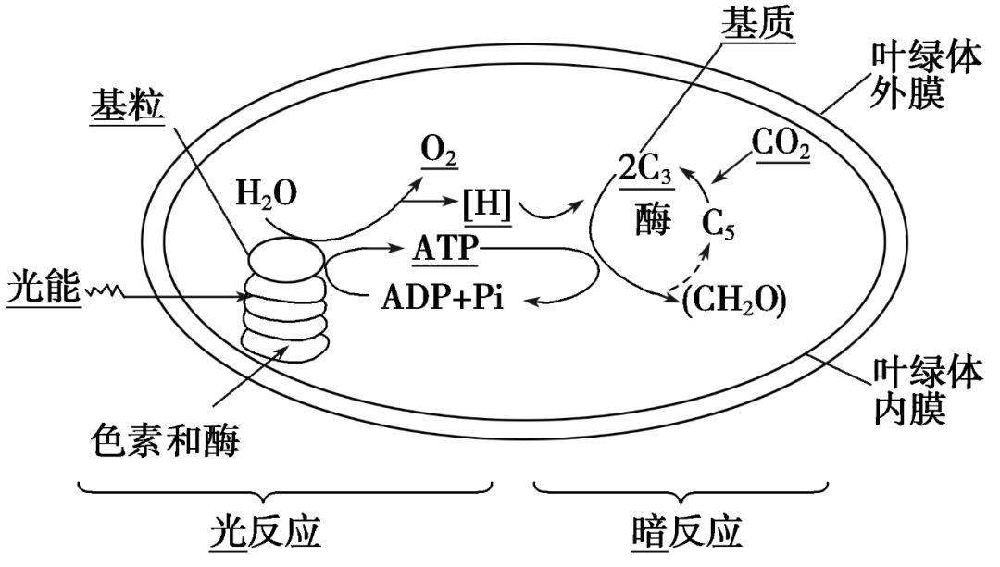

什么是光合作用？
光合作用是植物利用光能将二氧化碳和水转化为葡萄糖和氧气的过程。这一过程是植物生长和发育的基础。
光合作用的过程
光合作用主要分为两个阶段：光反应和暗反应。
- 光反应：在叶绿体的类囊体膜上进行，光能被吸收并转化为化学能，产生ATP和NADPH。
- 暗反应：在叶绿体的基质中进行，利用ATP和NADPH将二氧化碳固定，生成葡萄糖。
光合作用的重要性
光合作用不仅为植物提供能量和有机物质，还为地球上的生物提供氧气，是维持生态平衡的重要过程。
光合作用是植物利用光能将二氧化碳和水转化为葡萄糖和氧气的过程。这一过程是植物生长和发育的基础。
光合作用主要分为两个阶段：光反应和暗反应。
光合作用不仅为植物提供能量和有机物质，还为地球上的生物提供氧气，是维持生态平衡的重要过程。